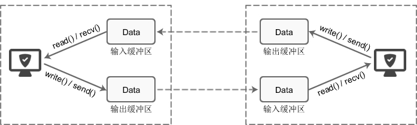
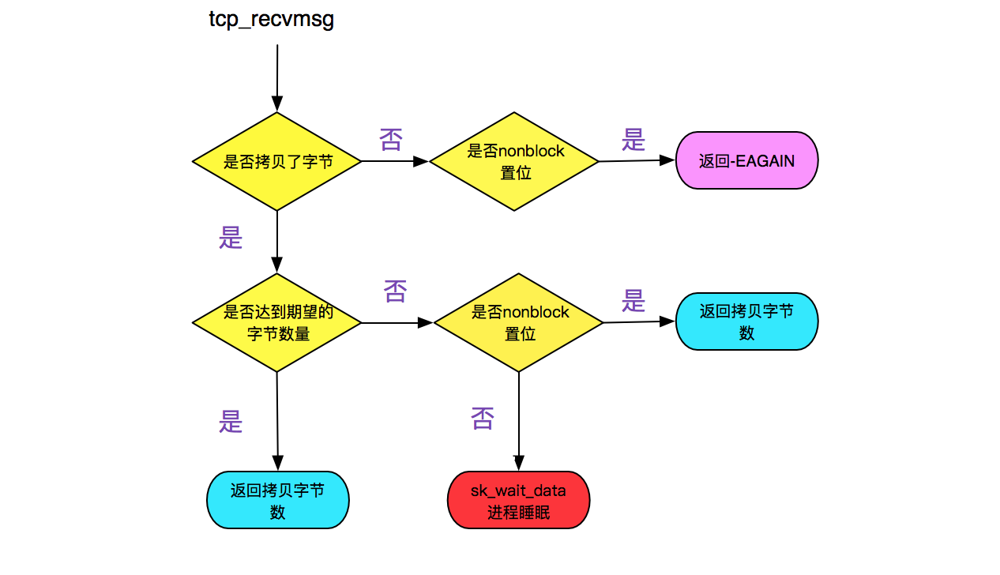

谈谈socket缓冲区
每个socket被创建后，无论使用的是TCP协议还是UDP协议，都会创建自己的接收缓冲区和发送缓冲区。当我们调用write()/send() 向网络发送数据时，系统并不会 马上向网络传输数据，而是首先将数据拷贝到发送缓冲区，由系统负责择时发送数据。根据我们选用的网络协议以及阻塞模式，系统会有不同的处理。
这些socket缓冲区特性可整理如下：
- socket缓冲区在每个套接字中单独存在；
- socket缓冲区在创建套接字时自动生成；
- 即使关闭套接字也会继续传送发送缓冲区中遗留的数据；
- 关闭套接字将丢失接收缓冲区中的数据。

TCP阻塞和非阻塞模式下的数据发送
- 阻塞模式下，调用write()/send()后程序将阻塞，如果发送缓冲区的可用长度大于待发送的数据，则数据将全部被拷贝到发送缓冲区，等待系统将发送缓冲区内的数据发送出去，当数据全部被拷贝到发送缓冲区后阻塞状态将消失；如果发送缓冲区的长度小于待发送的数据长度，则数据能拷贝多少就先拷贝多少（分批拷贝），一直等待直到数据可以全部被拷贝到发送缓冲区为止才可调用返回。write()/send()调用返回后并不能保证数据已经发送到对方缓冲区了，只能保证数据成功拷贝到发送缓冲区了，至于传输可靠性方面那就是由系统的协议栈来保证。
- 非阻塞模式下，调用write()/send()后，如果发送缓冲区剩余大小大于待发送的数据大小，那数据将完整拷贝到发送缓冲区，如果发送缓冲区剩余大小小于待发送的数据大小，那本次write()/send()则为尽可能拷贝，有多少空间就拷贝多少数据，返回值为均为成功拷贝到发送缓冲区的数据长度。
- 当接收端不接收数据，或者处理速率比发送方的发送速率低导致其接收缓冲区已满（接收窗口win=0），进而导致数据发送方的发送缓冲区的数据不断堆积进而缓冲区满，此时我们再调用write()/send()都将阻塞等待。
- 系统将发送缓冲区的数据通过网卡发到网络了，系统也不会立即将刚发送的数据从缓冲区中移除，只有当接收方回复了ack，我们才能认为对方收到了我们发送的信息，否则刚发送的数据必须还保留在发送缓冲区等待重传。当系统收到接收方对刚发送数据的ack后，才会移除发送缓冲区内对应的数据，腾出空间。
- 当启用了Nagle算法后，数据会倾向于堆积到一定大小或超时后才真正往网络发送数据，因此启用Nagle算法后的发送缓冲区更容易发生数据堆积。
- 因为发送缓冲区满导致write()/send()一直无法返回，这个可以通过setsockopt的参数 SO_SNDTIMEO来做超时处理，如果有数据成功拷贝到发送缓冲区，那超时后的返回值是成功拷贝到发送缓冲区的数据长度，如果没有数据拷贝成功，此时的超时后返回值为-1，errno为EAGAIN 或 EWOULDBLOCK，表现就是跟非阻塞模式的write()/send()是一样的。如果不设置默认就是永不超时。
- socket关闭时，但发送缓冲区中的数据仍未完全成功发送出去，那么这些数据将由系统负责把数据可靠地发送给对方。
TCP阻塞和非阻塞模式下的数据接收
- 调用read()/recv()时，如果模式选择的是阻塞模式，那么当接收缓冲区没数据时，程序就会一直拥塞等待，直到有数据可读为止，每次读的数据大小由进程控制，一般都需要分批读取，read()/recv()成功返回时的返回值是成功读取到的数据的长度；如果模式选择的是非阻塞模式，那么程序调用read()/recv()调用返回的返回值是成功读取的字节数，如果没数据可读时同样是马上返回，此时的返回值为0。
- 当程序并没有及时读取接收缓冲区中的数据，那缓冲区可利用的空间逐渐变小，直到缓冲区满，但TCP套接口接收缓冲区不可能溢出。这是因为TCP有流量控制策略，根据TCP的流量控制中滑动窗口机制，接收方会捎到窗口大小给发送方，如果缓冲区空间为0发送方也能及时知道停止发送。
- 当socket关闭时，如果接收缓冲区还有数据没读取，那么这部分数据将被丢弃。
- 跟TCP阻塞写相同，我们可以通过setsockopt的参数 SO_SNDTIMEO来对阻塞模式的读做超时处理，如果一段时间内没有数据读取成功，此时的超时后返回值为-1，errno为EAGAIN 或 EWOULDBLOCK。
- recv的第四个参数若为MSG_WAITALL，则在阻塞模式下不等到指定数目的数据不会返回，除非超时时间到。当然如果对方关闭了，即使超时时间未到，recv 也返回0。
UDP阻塞和非阻塞下的数据发送接收
- UDP套接口有发送缓冲区大小（SO_SNDBUF修改），不过它仅仅是写到套接口的UDP数据报的大小上限，即UDP没有发送缓冲区。如果一个应用程序写一个大于套接口发送缓冲区大小的数据报，内核将返回EMSGSIZE错误。
- 从UDP套接口write成功返回仅仅表示用户写入的数据报或者所有片段已经加入到数据链路层的输出队列。如果该队列没有足够的空间存放该数据包或者它的某个片段，内核通常返回给应用进程一个ENOBUFS错误。
- UDP是没有流量控制的：较快的发送端可以很容易淹没较慢的接收端，当接收缓冲区满后，后面收到的数据报都将丢弃。
- UDP存在丢包的可能：调用recvfrom方法接收到数据后，处理数据花费时间太长，再次调用recvfrom，两次调用间隔里，发过来的包可能丢失。处理方法是调大接收缓冲区或者通过将接收到数据存入一个缓冲区，并迅速返回继续recvfrom。
1 | UDP socket 设置为的非阻塞模式 |
阻塞、非阻塞的本质

阻塞：阻塞的本质是，进程因为资源等待而主动让出CPU，进程从运行队列删除，幷加入到等待队列，然后等待资源。等超时或数据资源到来则唤醒进程继续执行，若有数据可读那就把数据拷贝给进程，无数据可读但超时了则返回进程继续执行后面的逻辑。
非阻塞：本质是应用进程掌控读取数据的节奏，通过轮训的方式查询数据是否可读，进程始终占用着CPU，能比较好地满足高性能进程需求，执行效率高（数据没到位，进程可以继续处理其他业务，无需阻塞其他业务进行）。